面向对象程序设计¶
翁恺班的笔记，补充了陈翔班课程的部分内容
Using Objects Week 1(ChenXiang)¶
The string class¶
char charr1[20];
char charr2[20] = "jaguar";
string str1; //fixed value('\0') in str1(different from C)
string str2 = "panther";
charr1 = charr2; //illegal(in C,we have to use strcpy)
str1 = str2; //legal
string(const char *cp,int len);
string(const string& s2,int pos);
string(const string& s2,int pos,int len);
substr(int pos,int len);
assign(...);
insert(const string&,int len);
insert(int pos,const string& s);
erase(...);
append(...);
replace(...);
replace(int pos,int len,const string& s);
File I/O¶
#include <ifstream> //read from file
#include <ofstream> //write to file
ofstream file1("C:\\test.txt");
file1 << "Hello World" << std::endl;
ifstream file2("C:\\test.txt");
std::string str;
file2 >> str;
A Quick Tour of C++ Week 2(ChenXiang)¶
STL Week 3(ChenXiang)¶
Standard Template Library
[Definition]Part of the ISO Standard C++ Library,Data Structure and Algorithms
- Containers:class templates,data structures
- Algorithms
- Iterators:uniform access of manners
Containers¶
- Sequential:array(static),vector(dynamic),deque(double-ended queue),(forward_)list
- Associative:set(key),map(key-value),multiset,multimap
- Unordered associative
- Adaptors:stack,(priority_)queue
vector¶
- Constructor,destructor
- Element access:at,operator[],front,back,data,...
- Iterators:begin,end,cbegin,cend,...
- Capacity:empty,size,reserve,capacity,...
- Modifiers:clear,insert,erase,push_back,...
list¶
(doubly-linked)
push_back,list<string>::iterator p;
map¶
map<string,float> price;
multi-map:one key corresponds to multiple values
stack¶
adaptor:转换器
Algorithms¶
- [first,last)
- for_each,find,count,...
- copy,fill,transform,replace,rotate,...
- sort,partial_sort,nth_element,...
- set_difference,set_union,...
- accumulate,partial_sum,...
Iterators¶
STL
- input iterator
- output iterator
- forward iterator:++p,p++,*p,==,!=,=(forward list,unordered_map,unordered_set)
- bidirectional iterator:...,--p,p--(list,set,map)
- random access iterator:p+=i,p-=i,p+i,p-1,p[i],<,>,<=,>=,p2-p1(vector,deque)
- 不支持迭代器：stack,queue
begin(),end()
end()常不能达到，用!=stl.end()作为结束条件
list<int> L;
list<int>::iterator li;
li = L.begin();
++li;
*li = 10;
L.erase(li);
++li; //ERROR
//可以使用li = L.erase(li)获得一个新的iterator
Typedefs¶
auto:编译器推断
using
typedef map<Name,list<PhoneNum>> PB;
Defining Class Week 3¶
Q1:All the functions take a pointer to Point as the first parameter,why?If we take it as a global var,is it OK?ANS:No,because we need to tell the function which struct to deal with
Solution:put the functions into the struct -> member functions class
::所有格resolver
void S::f() //function f in class S
{
::f(); //global function f,instead of recursively call
::a++; //global a
a--; //local a
}
this is a pointer points to the object
Object¶
Object = Attributes + Service = Data(private) + Operations(Public)
UML:name,attribute,service(operations)
class≈struct(class默认访问权限为private而struct为public)
任何class都需要分在.h与.cpp两个文件中，.h提供声明供他人使用，.cpp提供private实体
One class definition per header.h
Only declarations are allowed in .h
- extern var
- function prototypes
- class/struct definition
include¶
- #include "xx.h"：优先搜索.cpp文件所在目录再到指定位置搜索
- #include
：指定位置搜索 自带头文件 环境变量 -I - #include
：与 相同
Constructor¶
What will happen if we forget to initialize?
Without initialization,we won't get fixed value.
struct Point
{
int x;
int y;
Point(int x,int y) // 构造函数
{
this->x = x;
this->y = y;
}
};
int main()
{
Point p(1,2);
Point p2{1,2};
}
没有参数的构造函数：default
成员变量的赋值
- 在结构体中赋值
- 在构造函数头中添加初始化列表
Point(int xx,int yy):x(xx),y(yy)成员变量名(初始化值) - 在构造函数中赋值
- 以上三种按序进行
struct Y
{
float f;
int i;
Y(int a);
//如果定义了其他构造函数，编译器不会自动生成默认构造函数
//除非显示说明Y() = default;
}
Y y1[] = {Y(1),Y(2),Y(3)}; //OK
Y y2[2] = {Y(1)}; //ERROR
Y y3[7]; //ERROR
Y y4; //ERROR
Destructor¶
What happens withgoto and switch?Not allowed.
Inside Object Week 4¶
what to do and how to do
Access Control¶
- public
- friend:授权（所有）私有成员，被以下接收
自由函数
类中的函数
整个类 - private:私有的边界是类，不是对象
同一类的不同对象可以互相访问private成员
e.g.拷贝构造可以直接利用私有变量传参 - protected:子类可以访问
Objects in different places¶
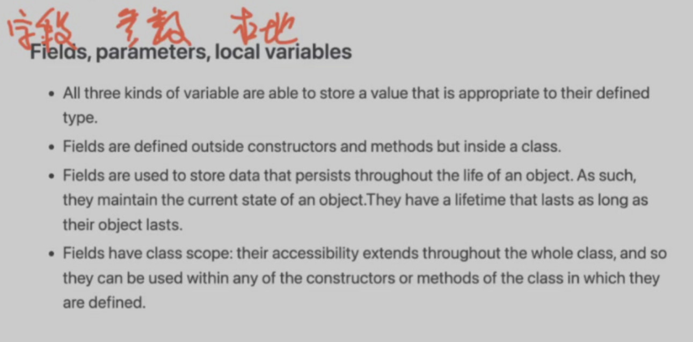

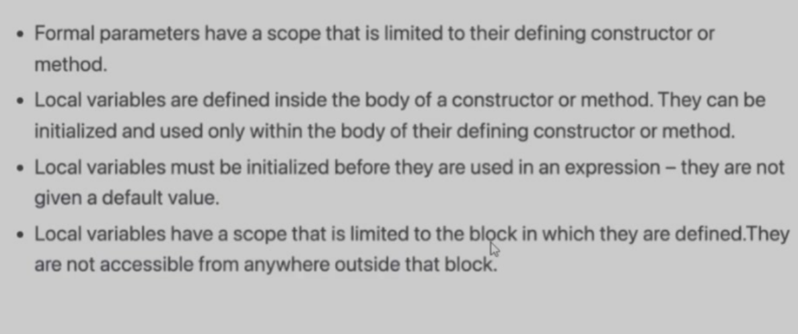
任何一个对象都只属于一个具体的类
Static¶
Initialization Dependency:not guaranteed
strong recommend:no global vars!
- static storage
- restricted access
use static only inside functions and classes
- static free function:deprecated
- static global vars:deprecated
- static local vars:persistent storage
- static member vars:shared
- static member functions:shared
static object:initialized when first called,destruct as a global var
static member:不在class的存储空间中，被不同对象共享（被视为同一个）
class M{
static int m_h; //declaration,not belonging to the class
int m_w; //declaration
};
int M::m_h;
static int M::m_h;//ERROR
this,不能访问任何非静态成员变量或函数不需要制造对象即可调用(
应用：提供制造类对象的方法，作为制造函数
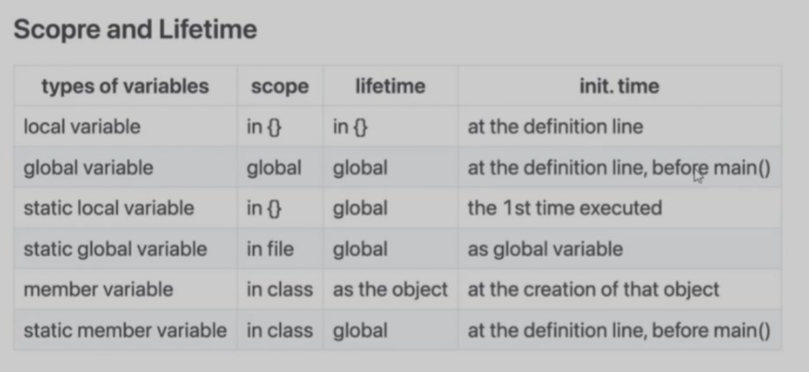
local vars的空间分配发生在进入函数时，编译器会在进入函数时算好所有本地变量需要的最大空间与地址
static local variable:在程序结束前析构，在函数内访问
static member variable的构造与析构与global variable相同，在类内访问
!!! danger "static变量/函数必须在类外(.cpp)中声明！
Constant object¶
How can the object be protected from change?
Solution:declare member functions const
int Data::set_date(int d){
day = d;
}
int Data::get_date() const{
day++; //ERROR modify data member
set_day(12);//ERROR call non-const member function
return day;//OK
}
静态成员变量不可能是const，因为没有this指针，只能在初始化列表初始化(const是无用的，const确保类对象不被修改，而static member不属于类)
const and non-const member function can coexist(overload)
Memory model Week 4(ChenXiang)¶
variables¶
int i;//global vars
string str;
static int j;//static global vars
f()
{
int k;//local vars
static l;//static local vars
int *p = malloc(sizeof(int));//allocated local vars
}
- Global data:global vars,static global vars,static local vars(i,j,l,str)
- Stack:local vars(k)
- Heap:dynamically allocated vars(*p)
global vars:vars defined outside any functions and classes and can be shared between .cpp files(extern)
static vars:inhibit to be accessed outside .cpp
static local vars:keep its state btw functions
static
- restricted access scope
- persistent storage
reference¶
ps = &s,(*ps).length(),ps->length()
绑定别名(alias)(一次性不可计算的指针)，通过引用直接操作原始变量，共享存储，不是指针，不需要解引用
char p;
char* s = &p;//a pointer to a character,s points to the addr of p
char* s = p;//ERROR
*s = x;//把x的值赋值给s指向的变量，*是一个运算符
char& r = q;//a reference
int x = 47;
int& y = x;
int& y = z;//ERROR,reference is permanent and cannot be changed
int& y;//ERROR,reference cannot be null
cout << "y = " << y << endl;//y = 47
y = 18;
cout << "x = " << x << endl;//x = 18
y = z;//copy the value of z to y(a.k.a x)
void f(int&);
f(i * 3)//not allowed
//i * 3是右值，不能出现在赋值号左边，不能被reference接收
//reference只能接受一个左值
//右值：只能放在赋值号右边
//左值：即可以放到赋值号左边又可以放在赋值号右边*,[],.,->
int&* p;//illegal,reference没有实体，无法被指向
void f(int*& p);//legal,the reference of pointer
//no reference to reference
//no array of reference
void f(int& x){
x++;
}
int main()
{
int y = 5;
f(y);
cout << y << endl; // 6
//不再是值传递 f(y)能成功的修改y了
}
*右值引用¶
dynamic memory allocation¶
new int;//malloc(向程序运行的进程申请空间)
new Stash;//construct object in heap
new int[10];
delete p;//free
delete[] p;
cannot delete twice but can delete nullptr
new 返回的是指针
int* p =new int;//heap上的空间分配：Magic number(4bytes) + bytes allocated '4'(4bytes) + p(4bytes)
int* a =new int[10];
Student* q = new Student();//可传参
Student* r = new Student[10];
delete p;//-8 bytes,check是否是magic number,如果不是则报错
a++;
delete[] a;//ERROR
delete q;//Destructor,then check magic number
delete r;//1 destructor,then delete 1 student(ERROR in some compilers)
delete[] r;//10 destructor
constant¶
const int x = 123;
x = 27; //illegal
x++; //illegal
int y = x; //legal,copy const to non-const
y = x; //legal
const int z = y; //legal
const is an internal linkage
- Compile time constants
- Run-time constants
//compile time const int class_size = 12; //store in .text int finalgrade[class_size]; //legal //run time int x; cin >> x; const int size = x; double classaverage[size]; //error,static array length must be fixed when compiling!int a[] = {53,54,55}; int * const p = a;// p(pointer) is a const *p = 20; //legal p++; //illegal const int *p = a; // (*p)(the object pointer p points to) is a const *p = 20; //illgal p++; //legal //不能通过指针修改变量（变量本身能否修改取决于变量本身是否有const） //观察const在*左边还是右边String literals:in .text,read onlyint i; const int ci; int* ip; const int* cip; ip = &i; ip = &ci; //illegal,ci cannot be modified but ip can,this is not allowed cip = &i; cip = &ci; *ip = 54; //always legal *cip = 54;//never legal
Inside Class Week 6¶
Overload¶
class point{
int x,y;
public:
point():x(0),y(0){}
point(int xx,int yy):x(xx),y(yy){};
};
int main()
{
point p(1,2);
point p2;
point a[10];
}
不同的返回类型不构成重载
//*Delegating Ctors
class Info{
public:
Info(){InitRest();}
Info(int i):Info(){type = i;}
Info(char e):Info(){name = e;}
}
//逐级代理
class class_c{
public:
int max;
int min;
int middle;
class_c(int my_max){
max = my_max > 0 ? my_max : 10;
}
class_c(int my_max,int my_min):class_c(my_max){
min = my_min > 0 && my_min < max ? my_min : 1;
}
class_c(int my_max,int my_min,int my_middle):class_c(my_max,my_min){
//只能有一个代理构造，早于初始化列表，晚于定义初始化
middle = my_middle < max && my_middle > min ? my_middle : 5;
}
}
不能循环代理
Default argument¶
在成员函数的参数表中放入默认值
class point{
int x,int y;
public:
void k(int a,int x=0,int y=0) const {
cout << x << endl;
}
};
int main()
{
const point p;
p.k();//ERROR
p.k(9);
p.k(9,10);
p.k(9,10,11);
}
void k(int a,int x=0,int y):not allowed,default arguments written from right to left默认参数值写在声明(.h)中而不要写在定义(.cpp)中
因为参数值是依据头文件由编译器填入的（与函数内部无关）
Inline functions¶
overhead(额外开销) for a function call:context_switch
inline是C语言的特性
inline的代价:浪费空间需要在声明与定义repeat
inline关键字不会在obj中产生任何代码(无法链接)
需要将
inline函数的body写在.h中，以供编译器'抄写'Better than
define,inline会检查变量的类型. 是否真的
inline是由编译器根据函数大小或函数是否递归、循环、是否有静态变量自行决定的
Composition Week 7¶
composition:construct new object with existing objects
Reuse the implementation
ways of composition
- fully(Ctor and Dtor are automatically called)(Only C++)
- by reference
logical relationship is not fully(e.g.supervisor & employee)
size-of is unknown beforehand
resource is to be allocated/connected at run time(exception)
class SavingsAccount{
public:
SavingsAccount(
const char* name,
const char* address,
int cents);
~SavingsAccount();
void print();
private:
Person m_saver;
Currency m_balance;
};
class Employee{
...
private:
Supervisor *m_supervisor;
};
传值构造
class A{
int i=0;
public:
A(int ii):i(ii){cout << "A::A()" << endl;}//必须传值构造
//A(int ii=0):i(ii){} //可作为默认构造
~A(){cout << "A::~A()" << endl;}
}
class B{
int j=1;
B(int i):j(i){cout << "B::B()" << endl;}
~B(){cout << "B::~B()" << endl;}
}
class C{
A a;
B b;
public:
C():b(1),a(2){}//初始化列表顺序与构造顺序无关
}
SavingsAccount::SavingsAccount(
const char* name,
const char* address,
int cents):m_saver(name,address),m_balance(0,cents){}
//参数构造m_saver,m_balance
void SavingsAccount::print(){
m_saver.print();
m_balance.print();
}
SavingsAccount::SavingsAccount(
const char* name,
const char* address,
int cents){
m_saver.set_name(name);
m_saver.set_address(address);
m_balance.set_balance(cents);
//默认构造再赋值
}
//
private.Example:clock display
Inheritance Week 8¶
Inheritance is to take the existing class,clone it,and then make additions and modifications to the clone.
Reuse the interface
OOP的三大特性：封装，继承，多态
Example:DoME(Database of Multimedia Entertainment)
- CD:title,artist,tracks,playingtime,got-it,comment
- DVD:title,director,playingtime,got-it,comment
listandprint
可修改：可维护性
不需要修改：可扩展性
基类（父类）->派生类（子类）
What does it inherited?¶
- private member vars.
inaccessible
exist in derived class(内存中先于子类的member vars，父类嵌入子类对象) - public member functions
are public mumber functions of derived class too - private member functions
inaccessible in derived class - protected members
fully and only accessible in derived class - static members
a change to all
父类先被Ctor后被Dtor
Name hiding¶
子类中重写父类overloaded函数中的一个，会导致其他重载函数隐藏
Use virtual to affect function overloading(Polymorphism)
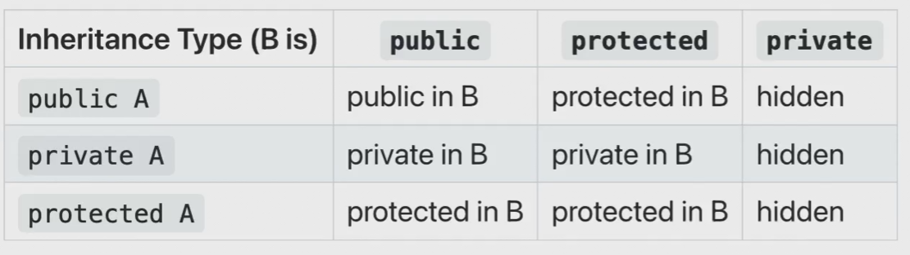
private继承可以理解为composition
Polymorphism Week 9 - 10¶
Subtyping
Vehicle *v1 = new Vehicle();
Vehicle *v2 = new Car();
Vehicle *v3 = new Bicycle();//通过v3,我们只认为他是一个vehicle
public class Database{
public void addItem(const Item &item)
{
...
}
}
DVD dvd;
DVD cd;
Database.addItem(dvd);
Database.addItem(cd);
casting¶
casting:类型转换
Person *p = new Student();
//Student is still a student,we just not treat it as a student
Manager pete("Pete","444-55-6666","Bakery");
Employee* ep =&pete;
Employee& er =pete;
ep->print(cout);//lose type information about the object
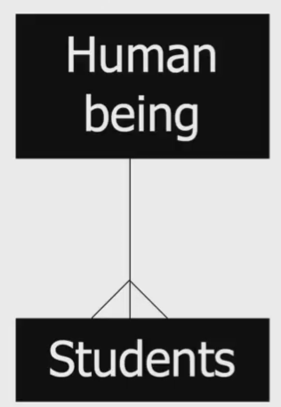
virtual¶
[Question] What's the point of saying it's a subclass object?
[Example] Shapes:Rectangle,Circle & Ellipse
Operations:render,resize,move
Data:center
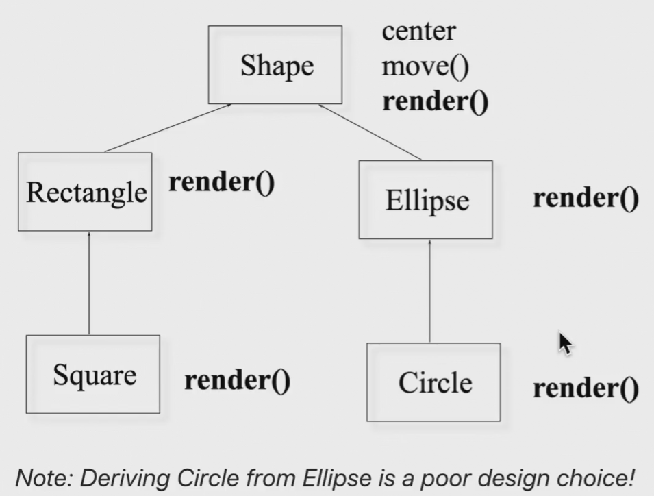
virtual (together with pointer) calls the relevant subclass member function(dynamic binding)
rectangle r;
draw(&r);
r.render();//static binding:compile time
shape* p = &r;//p is a polymorphic variable
//static(declared) type:shape,dynamic(run-time) type:rectangle
p->render();
//(*p -> vptr -> vtable[?])()
//to select which function to call:binding
//dynamic binding:run time
output:(without `virtual`)
shape::render()
rectangle::render()
shape::render()
static binding:call the function as the code
dynamic binding:call the function of the object
virtual functions
- non-virtual:compiler generates static
- virtual
can be transparently overridden(覆盖)
objects carry a pack of their virtual functions
compiler checks pack and dynamically call
How does virtual work?¶
note:the sizeof a class with no member var is '1'(not '0' which is unscientific)
without virtual,sizeof(subclass) = sizeof(superclass) + 4 * number of member vars(unless sizeof(superclass) == 1)
with virtual(no matter how many),a vptr(virtual pointer) is generated,which points to vtable(owned by the class)
vtable consists all the function pointer in the class
sizeof(vptr) = 8(in x64) or 4(in x86)
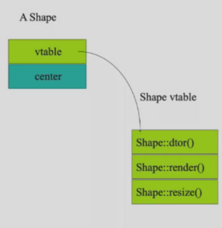
Rectangle r;
Shape s;
s = r;
Shape* p = &s;
p->render();//Shape::render()
p = &r;
p->render();//Rectangle::render()
vptr won't be transferred,because vptr is generated in constructor
Virtual destructors¶
Why?
Therefore,every class ought to have a vptr
Override¶
Superclass and subclass define methods with the same signature(function prototype)
Suppose D is derived from B,should D::f() and B::f() have the same input type and output type?
class expr {
public:
virtual expr* newexpr();
virtual expr& clone();
virtual expr self();
};
class binaryexpr : public expr {
public:
virtual binaryexpr* newexpr();//OK
virtual binaryexpr& clone();//OK
virtual binaryexpr self();//Error!Type not match,c++ prohibit this operation
//note:virtual in subclass can be neglected
};
Only override on virtual functions!
Shape is an abstruct class,we actually don't want a shape object to be created.
某一个函数
virtual f() = 0，表示类是抽象的，抽象类不能构造对象抽象类的子类可以是抽象类
*Multiple Inheritance¶
一个类有多个父类(only c++):菱形继承的问题，其余oop语言的单根结构（所有类都是object类的子类，容易实现容器）
c++通过多继承制造容器
虚继承：指针指向爷类
虚继承解决多继承，多继承解决没有单根结构的问题，最终被模板取代
多继承只有在多个父类只有一个是实际类的时候可以进行
Copy and Move Week 10¶
Copying¶
get a copy of the existing object unconsciously
E.g.
void func(Currency p) {
cout << "X = " << p.dollars();
}
...
Currency bucks(100, 0);
func(bucks);//bucks is copies into p
//Currency p = buck; or Currency p(buck);
//we actually do a construct
//but we can only call a default constructor(see howmany.cpp)
HowMany(const HowMany& r) {}When will copy happen ?
ClassType a = b;- function call
- function return
When must we have a copy ctor ?
When we have a pointer in member var(or other non-memory resources,e.g.句柄)
why?See person.cpp
default constructor:member-wise copy(依次调用成员拷贝构造)/binary copy(逐字节拷贝，无法正确处理指针)
Person copy_func(char *who) {
Person local(who);
local.print();
return local;// copy ctor called unless NRVO applied
}
Person nocopy_func(char *who) {
return Person(who);
}//no copy needed,RVO automatically applied
Note:注意拷贝与赋值的区别
1.try to create own copy ctor if needed
2.declare a private copy ctor to avoid getting copied
Types of function parameters and return value¶
void f(Student i);//copy ctor,protect outside object
void f(Student *p);//indicate that we may modify the object
void f(Student& i);//better with const if won't modify
char *foo() {
char *p;
p = new char[10]; //不要在函数中申请内存再交出去
strcpy(p,"something");
return p;
}
void bar() {
char *p = foo();
printf("%s",p);
delete p; //What if someone forget,how can she know a delete is needed
}
//a better version
char *foo(char *p) { //传入指针
strcpy(p,"something");
return p; //操作完成后传出去
}
void bar() {
char p[10];
char *p = foo(p);
printf("%s",p);
// delete p; //no longer needed
}
*Moving¶
get all the info of the original object while destroying the original one
参数为右值引用(&&)的拷贝构造
DynamicArray(DynamicArray&& rhs):m_size{rhs.m_size},m_array{rhs.m_array}
{
rhs.m_size = 0;
rhs.m_array = nullptr;
cout << "Move constructor:dynamic array is moved! << endl;
}
Student s)使用std::move获得右值
vector<int> v1{1,2,3,4};
vector<int> v2 = v1;//copy ctor
vector<int> v3 = std::move(v1); //move ctor
//std::move将v1转化为右值，移动后v1消失
string str("hello");
string str = "hello";
struct student {
char *name;
int age;
};
student s = {"dablelv",18};
student sarr[] = {{"dablelv",18},{"tommy",19}};
class test {
int a;
int b;
public:
test(int i,int j);
};
test t{0,0};
test *pt = new test{1,2};
int *a = new int[3]{1,2,0};
//{} only in c++11
class Base {
public:
void f();
};
class Child : public Base {
public:
using Base::f;
void f(int i) {}
}
Overloaded Operator Week 11¶
[Recall] Overload的条件：函数的名称相同参数表不同（参数个数不同或类型不同且类型不会引起歧义）
子类和父类的指针不构成overload(歧义)，const与non-const构成overload
operators can be overloaded
+ - * / % ^ & | ~
= += -= *= /= %= ^= &= |=
<< >> <<= >>=
== != < > <= >=
! && || ++ --
, ->*(a.i) ->()(a.f(i)) []
new delete
new[] delete[]
** cannot be overloaded)Operators must be overloaded on a class or *enumeration type
enum{__,__,__}Overloaded must preserve the number of operands and precedence(优先级)
How to overload?
As member function¶
implicit first argument
no type conversion performed on receiver
As global function¶
use friend
Only one side need to be the class(3+a1 is allowed)
Choose between member function and global function
- Unary operators(单步运算
-,~) should be member = () [] -> ->*must be member- assignment operators should be member
- other binary operators are encouraged to be global
期末大题，多个运算符的参数表与返回类型
passing parameter¶
- read only(
+,>,...)(not read only:赋值运算符++,--,=,...):pass it asconst reference - member function that won't modify
this,use const member function - global function that will change its left-hand-side,pass it as
reference(but notconst reference)
return value¶
左值运算符
const before operator)
- if a new object is to generated,return a const object
- logical operators return
bool
prototypes of operators¶
+-*/%^&|~
const T operatorX(const T& l,const T& r);! && || < <= == >= >
bool operatorX(const T& l,const T& r);[]
E& T::operator[](int index);
++ and --¶
class Integer {
public:
...
const Integer& operator++(); //++i
const Integer operator++(int); //i++(返回另一个对象,this中的i加1)
//we often transfer '0' for int
...
}
const Integet& Integer::operator++() {
*this += 1;
return *this;
}
const Integet Integer::operator++(int) {
Integer old(*this);
++(*this);
return old;
}
Relational operator¶
use == < to implement != > <= >=
bool Integer::operator==(const Integer& rhs)const {
return i == rhs.i;
}
bool Integer::operator!=(const Integer& rhs)const {
return !(*this == rhs);
}
bool Integer::operator<(const Integer& rhs)const {
return i < rhs.i;
}
[]¶
stream extractor/inserter and manipulator¶
//global function not const
istream& operator>>(istream& is,T& obj) {
is >> p.name >> p.age;
return is;
}
cin >> a >> b >> c;
ostream& operator<<(ostream& os,const T& obj) {
os << p.name << p.age;
return os;
}
cout << a << b << c;
ostream& manip(ostream& out) {
...
return out;
}
ostream& tab(ostream& out) {
return out << "\t";
}
cout << "Hello" << tab << "World";
copying & initialization¶
T& T::operator=(const T& rhs)
{
if(this != &rhs){ //this is a must,in case `a=a` delete itself
...
}
return *this;
}
value classes¶
explicit:indicating that the ctor cannot be used for data conversions
class PathName {
string name;
public:
explicit PathName(const string&);
~PathName();
};
...
string abc("abc");
PathName xyz(abc);//OK
xyz = abc;//ERROR with explicit
X::operator T()class Rational {
public:
operator double() const;//Rational to double
//无返回类型
};
Rational::operator double() const {
return numerator_/(double)denominator_;
}
Rational r(1,3);
double d = 1.3 * r;
C(T) and operator C() cannot be both accessible(compiler may confuse)Usually,we'd rather use
double todouble() const;overloading and type conversion:c++ check each argument for a best match
Template Week 12¶
[Insights] similar code for different types
Other oop language solution:common superclass
//a c implementation
class Stack {
void push(void *);
void* pop();
//Stack();
Stack(int cap,int os);//capacity,object_size
private:
//void **pBuf;
void *pBuf;
//cannot deal with pointer when copy
};
pBuf = new char[cap * os];
Stack(100,sizeof(Student));
Function templates¶
Instantiation实例化No instantiation is not used,c.f.function instantiated if not called
inline functions are declarations,so is templates.Function with no
template is found firstOnly exact type match on types is used for
template,template does not support type conversion at allint add(int a, int b)
{
return a + b;
}
template <typename T>
T add(T a,T b)
{
return a + b;
}
cout << add(1.1,2.2f) << endl;//int add is called
//if no int add,ERROR
template <typename T>
T foo(void){
/*...T is used inside function*/
/*compiler don't know what is T because no parameter to infer*/
}
foo<int>();//tell the compiler what is T
foo<float>();
Class templates¶
stack<int>,list<Person>,queue<Job>
template <typename T>
class Vector {
public:
Vector(int);
~Vector();
Vector(const Vector&);
Vector& operator=(const Vector&);
T& operator[](int);
private:
T* m_elements;
int m_size;
};
template <typename T>
T& Vector<T>::operator[](int i)//必考：T& Vector<?>
{
return content[i];
}
Vector<int> v1[100];
Vector<Complex> v2[256];
v1[20] = 10;
v2[20] = v1[20]; //OK if int->Complex is defined
parameters¶
template <typename KEY,typename VALUE>
class HashTable{
const VALUE& lookup(const KEY&) const;
void install(const KEY&,const VALUE&);
...
};
Vector< Vector<double *> >,space between>> is recommendedVector< int (*)(Vector<double>&,int )>函数指针，相当于Vector< int f(Vector<double>&,int )>Expression
template <typename T,int bounds = 100>
class FixedVector {
public:
FixedVector();
// ...
T& operator[](int);
private:
T elements[bounds]; //fixed size array
//bounds is no longer a variable after instantiation
//not allowed otherwise,see vector.cpp
};
template <typename T,int bounds>
T& FixedVector<T,bounds>::operator[](int i){
return elements[i];
}
FixedVector<int,10> v1;
FixedVector<int> v2; //default bounds
//no pointer,copy ctor & overloaded assignment is not needed
Inheritance¶
template <typename A>
class Derived:public Base{}
template <typename A>
class Derived:public List<A>{}
class SupervisorGroup:public List<Employee*>{}//从模板实例出来的类得到继承
friend,static members are allowedIN GENERAL,put the definition and declaration for the template in the header file
template SHOULD NOT have a
.cppcompiler/linker can remove multiple definition of templates automatically
Exception Week 13¶
The basic philosophy of C++ is that "badly formed code will not be run"
more strict type check than C
Run-time error:可预见，不可避免，不一定发生
Try-catch¶
Why needed?
Readability of code,Convenience of Modification
No further code will be executed if an exception happened,and we won't come back after exception handled
What is a good exception handle choice?
1.return random object
2.return special value
3.die(exit)
4.die gracefully(assert)
Exception handle chain¶
template<typename T>
T& Vector<T>::operator[](int indx) {
if(indx < 0 || indx >= m_size)
throw <<something>>; //something can be any type
return m_elements[indx];
}
class VectorIndexError {
public:
VectorIndexError(int v):m_badvalue(v) {}
~VectorIndexError(){}
void diagnostic() {
cerr << "index" << m_badvalue << "out of range!" << endl;
}
private:
int m_badvalue;
};
throw VectorIndexError(indx);:throw the object itselfint func() {
Vector<int> v(12);
v[3] = 5;
int i = v[42]; // i won't get value;
return i * 5; //won't be done
}
// return to where caller calls func
// caller gets the exception raise from func
void outer2() {
String err("exception caught");
try {
func();
} catch (VectorIndexError& e) {
cout << err;
throw; //propagate the exception
}
}
void outer3() {
try {
outer2();
} catch(...) {
//... catches all exceptions
cout << "Exception stops here!";
}
}
Is surrounding(
{}) a try?- No:leave the scope(e.g. if)
- Is it a function body?
Yes:return to the caller(Dtor the objects except the Error object)
the Error object Dtor happens only after caught
No:Is surrounding(
{}) a try?- Yes:try to match a catch
- Match?
Yes:do the clause
No:(try means a throw,attempt to find another try)Is surrounding(
{}) a try?
handler selection
Handlers check in order of appearance,if exception "is a" object of the type in catch block
Standard library exceptions¶
new¶
malloc() returns NULL if failed
new raises a bad_alloc exception
Bad Exception¶
Exception specification
void abc(int a) throw(MathErr)
/*c++ compiler doesn't know whether MathErr is handled properly
java compiler does*/
{
...
}
//If other exceptions thrown,compiler gives a bad exception
void goodguy() throw (...){
//handles all exceptions
}
void goodguy() throw (){
//no exceptions
}
void average() {} //no checking
void lala() noexcept;
//tell the compiler the function should not raise exceptions
Design considerations¶
Exception should be used for errors
try{
for(; ;)
p = list.next();
} catch (List::end_of_list) {
}
// a bad design,but python actually did it
More exceptions¶
Failure in ctor¶
A* p = new A(); the space is allocated,but no pointer points to it(memory leak)
delete this only for objects newed and a well-written dtor
two stages construction
Ctor cannot raise exception(only variable assignment)
Every operation that need memory allocation should be done after ctor(Additional initialization including file,network connection & memory allocation in Init())
Failure in dtor¶
Stack unwinding:If dtor is called when handling other exceptions,and it throws an exception,call terminate() to terminate the programme
class Resource {
public:
~Resource() noexcept(false) {
throw std::runtime_error("Oops"); // dangerous!
}
};
int main() {
try {
Resource res;
throw std::runtime_error("First error"); // stack unwinding
//two exceptions co-exists,c++ calls std::terminate()
} catch (...) {
// never executed
}
}
Design and usage¶
struct X {};
struct Y : public X {};
try {
throw Y();
} catch (X x){
// copy ctor,loses of some info
}
//use reference instead!
try {
throw new Y();
} catch (Y* p) {
//forget to delete
}
//java can delete automatically,but in c++,try to avoid pointer in catch
#include <exception>
void my_handler(){
std::cout << "Unexpected exception!\n";
exit(1);
}
void f() throw(X,Y) {
throw Z();
}
void main() {
std::set_unexpected(my_handler);
//unexpected exception go to `my_handler()`
try {
f();
} catch(...){
//won't execute
}
}
If an exception is thrown but not caught,
std::terminate() will be called
Reminder¶
1.return special value is always an efficient way,don't give it up!
2.Exception
3.assert
Smart pointer Week 14¶
goals:reference counting(the object is pointed by how many pointers) for garbage collection
Class UCObject holds the count,UCPointer is a smart pointer to a UCObject
UCPointer is an object implemented using a template and overloads operator-> and unary operator*
class String {
private:
//char* s;
UCObject *s; //has a reference count
public:
string(const char* ss) {
s = new char(strlen(ss) + 1);
//strcpy(s,ss);
s = ss;
}
~string(){delete[] s;}
};
String abc("abcdef");
String def = abc; //copy ctor,point to "abcdef",reference count ++
abc = "Hello world"; //COW
Reference counting¶
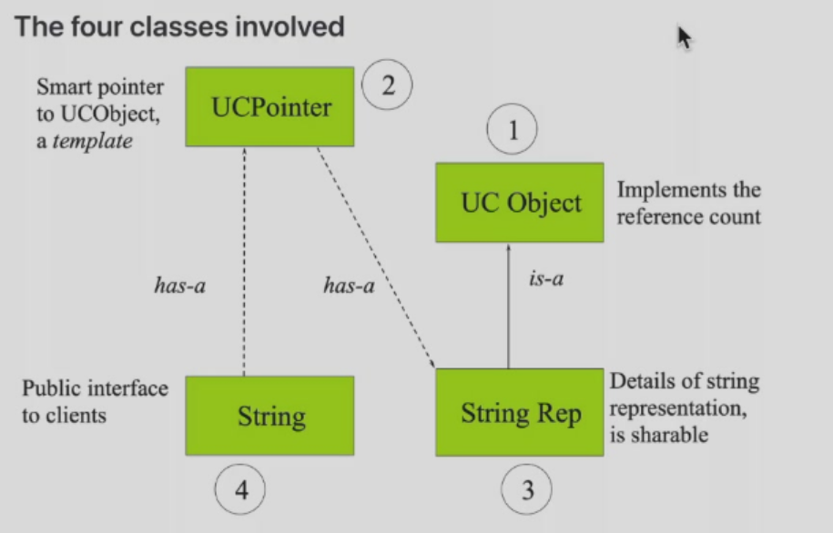#include <assert.h>
class UCObject {
public:
UCObject():m_refCount(0) {}
virtual ~UCObject() {assert(m_refCount == 0);};
UCObject(const UCObject&) : m_refCount(0) {} //new UCObject
void incr() {m_refCount ++;}
void decr();
int refereces(){return m_refCount;}
private:
int m_refCount;
};
inline void UCObject::decr() {
m_refCount -= 1;
if (m_refCount == 0)
delete this;
}
template <typename T> //we hope T is inherited from UCObject
class UCPointer {
private:
T* m_pObj;
void increment(){if(m_pObj) m_pObj->incr();}
void decrement(){if(m_pObj) m_pObj->decr();}
public:
UCPointer(T* r=0):m_pObj(r){increment();}
~UCPointer(){decrement();}
UCPointer(const UCPointer<T>& p);
UCPointer& operator=(const UCPointer<T> &);
T* operator->() const;
T& operator*() const {return *m_pObj;};
};
template<typename T>
UCPointer<T>::UCPointer(const UCPointer<T>& p) {
m_pObj = p.m_pObj;
increment();
}
template<typename T>
UCPointer<T>& UCPointer<T>::operator=(const UCPointer<T> &p){
if(m_pObj != p.m_pObj) {
decrement();
m_pObj = p.m_pObj;
increment();
}
return *this;
}
template<typename T>
T* UCPointer<T>::operator->() const {
return m_pObj;
}
class String {
public:
String(const char *);
...
private:
UCPointer<StringRep> m_rep;
};
String::String(const char *s):m_rep(0) {
m_rep = new StringRep(s);// ctor an object use the pointer
}
class StringRep:public UCObject {
public:
StringRep(const char *);
...
private:
char *m_pChars;
// no assignment op!
void operator=(const StringRep&) {}
};
StringRep::StringRep(const char *s) {
if(s) {
int len = strlen(s) + 1;
m_pChars = new char[len];
strcpy(m_pChars,s);
} else {
m_pChars = new char[1];
*m_pChars = '\0';
}
}
std::auto_ptr can be used as UCPointer
OOP Design Concept Week 15¶
Coupling耦合¶
loose coupling:understand one class without reading others;change one class without affecting others
Make the coupling between reusable parts(可重用) and other classes as loose as possible
call-back¶
回调函数addlistener(Listener *pl)
Ioc:注入反转,发出消息的类构造可接收对象，接收方构造接收子类，通过注册对象调用接收方代码
class Listener { // 可接收对象
virtual void action() = 0;
};
class Button { // 发出方
public:
onpressed(){pl;} // 通过注册对象调用接收方代码
addListener(Listener *pl);
private:
Listener *pl;
};
class Actor(Button *pB) { // 接收方
pB -> addListener(Actor::f()); //注册对象
void f() {dance();}
};
class ActorListener: public Listener { // 接收子类
void action();
};
message mech.¶
消息机制：
[model1] 所以对象相互独立，但都注册在一个中央消息机制中，通过向中央发送交给另一对象的字符串实现信息传递（字符串匹配）
[model2] 对消息机制划分角色，对象向中央注册函数
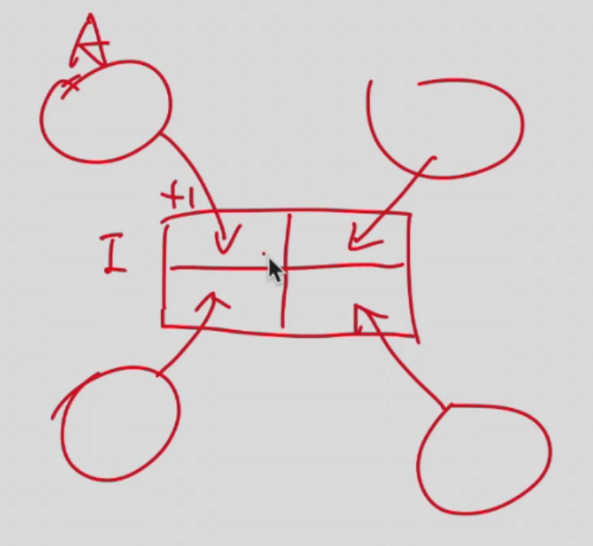
Cohesion内聚¶
[Definition] the number of diversity of tasks that a single unit is responsible for
We aim for high cohesion
Code duplication¶
bad design,hard maintenance
Responsibility-driven design¶
Each class should be responsible for manipulating its own data
localizing change
When a change is needed,as few classes as possible should be affected
Refactoring重构¶
classes and methons should be refactoried to maintain high cohesion and low coupling
Test before and after refactoring
extensibility¶
可扩展性：如果有需求变更，代码不经修改就可以适应新的需求
可维护性：如果有需求变更，代码简单修改就可以适应新的需求
Encapsulation¶
having all the data member private:限制数据访问，避免非法状态，隐藏实现细节，提高安全性与可维护性，降低耦合
Stream Week 16¶
[Definition] common logical interface to a device,sequential,one-direction & 1D,produce and consume value at a certain position
generic(iostream),file(fstream),string(sstream)
extractor>>,insertor<<,manipulation(change the stream state,e.g.endl)
Kinds of stream¶
1.text stream
text stream is a special kind of binary stream(everything in a computer is binary)
(1)every character is readable
(2)organized by line(\n)
(3)perform some character translation(e.g. binary->text,\n,0d0a -> 0d by Linux kernel)
2.binary stream
no translation
Predefined streams¶
cin,cout,cerr,clog
cerr:unbuffered debugging output
clog:buffered debugging output
cout << "Hello\n";
cerr << "Bye\n";
/*
./a.out >1
Bye
cat 1
Hello
./a.out 2>1 # direct cerr to 1
Hello
cat 1
Bye
./a.out >1 2>2
cat 1
Hello
cat 2
Bye
./a.out >>1 2>>2 # 添加
cat 1
Hello
Hello
cat 2
Bye
Bye
*/
Input Operation¶
int get()istream& get(char& ch)(similar to int get())istream& getline(istream& is,string& str,char delim='\n'); free functioncompared,
cin.getline(char* ,int size) is not preferredcin.ignore(int limit=1,int delim=EOF) skip over limit or to delimitint gcount():how many characters read during the last operationvoid pushback(char) on cin:push a character back to streamchar peek():examine next character without reading it (get & pushback)
Output Operation¶
put(char):prints a single characterflush():force c++ buffer written(whether OS & disk is written cannot be determined)
Manipulator¶
#include<iomanip>
int n;
cout << "enter a number in hexdecimal" << flush;
cin >> hex >> n; //按16进制读,all cin holds the state afterwards until we meet a dec
cout << setprecision(2) << 1000.243 << endl;//精度
cout << setw(20) << "OK!";//宽度
dec,hex,oct,endl,flush,setw(int),setfill(char)(左填充),setbase(int)(其他进制),ws(跳过空格),setprecision(int)stream flags
ios::skipws,ios::left,ios::internal(pad between sign and value),ios::dec,ios::showbase,ios::showpoint,ios::uppercase,ios::showpossetiosflags(flags)(按位或),resetiosflags(flags)(置0),setf(flags),unsetf(flags)#include<iostream>
#include<iomanip>
main() {
cout.setf(ios::showpos|ios::scientific);
cout << "123" << " " << "456.78" << endl;// +123 +40567800e+02
cout << resetiosflags(ios::showpos) << 123; // 123
return 0;
}
FAIL:操作/数据问题,ignore,clear to GOOD
BAD:用户
checking status:
good(),eof(),fail(),bad()int main()
int n;
cout << "Enter a value for n,then [Enter]" << flush;
while(cin.good()) {
cin >> n;
if(cin) { //an overload to int
cin.ignore(INT_MAX,'\n'); //clear the current line
break;
}
if(cin.fail()) {
cin.clear();
cin.ignore(INTMAX,'\n');
cout << "Try again" << flush;
}
}
File Stream¶
In C,fopen(filename,rt) for read text mode
In C++,we have
ios::app(append),ios::ate(position at the end),ios::binary,ios::in,ios::out
int main(int argc,char* argv[]) { //argv[0]:program name,argv[1]:source filename,argv[2]:target filename
//correct usage: ./copy source.txt target.txt
if(argc != 3) {
cerr << "Usage: copy file1 file2" << endl;
exit(1);
}
ifstream in(argv[1]);
if(!in) {
cerr << "Unable to open file" << argv[1];
exit(2);
}
ofstream out(argv[2]);
if(!out) {
cerr << "Unable to open file" << argv[2];
exit(2);
}
char c;
while(in >> c)
out << c;
}
open(filename,mode)ifstream inputS;
inputS.open("somefile",ios::in);
if(!inputS) {
cerr << "Unable to open somefile";
...
Cast Operators运算符¶
1.static_cast:compile time cast(int -> float,parent pointer/reference -> child,void -> T)
int main() {
int a=10;
double b = static_cast<double>(a);
class Base{};
class Derived:public Base{};
Derived* d;
Base* baseptr = static_cast<Base*>(&d);
void* voidptr = &a;
int* intptr = static_cast<int*>(voidptr);
}
2.
dynamic_cast:for Polymorphism(recall up-casting)class Base {
virtual void foo() {}
};
class Derived: public Base {};
int main() {
Base* baseptr = new Derived();
Derived* derivedptr = dynamic_cast<Derived*>(baseptr);//runtime check
if(derivedptr)
std::cout << "Cast succeed" << endl;
else
std::cout << "Cast failed" << endl;
delete baseptr;
}
3.
const_cast:change const/volatile(易变，不能优化，必须与内存做交换) attribute4.
reinterpret_cast:any type conversion(maybe dangerous),no type checkint main() {
int a = 65;
char* chptr = reinterpret_cast<char*>(&a);
std::cout << *chptr << endl;// 'A' in ASCII
}
Final Exam¶
不考察：右值引用，移动构造，成员变量构造初始化，代理构造
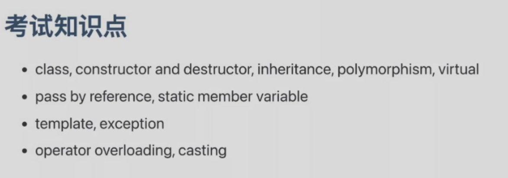
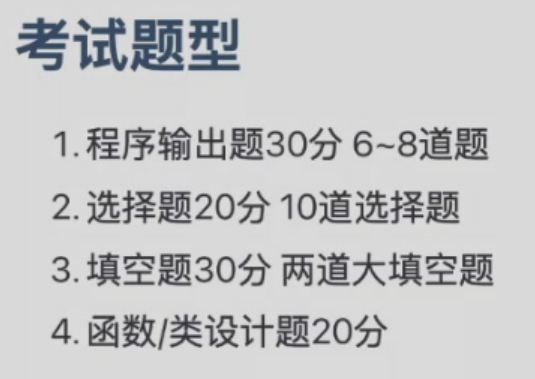
写输出，选择，改错
填空题:exception,overload,template...
设计题:不编译，不运行
Supplement¶
namespace¶
命名空间：划分全局类名避免名字冲突，不同命名空间可以定义相同的变量名
namespace space1{
string name = "randomstar";
void foo();
class cat(){
public:
void meow();
};
} //no ',' or ';' here!
namespace space2{
string name = "ToyamaKasumi";
void foo();
}
namespace space2{
void g();
}
int main()
{
cout << space1::name << endl;
using namespace space2;
cout << name << endl;
space1::foo();
using space1::foo();
using space1::cat;
foo();
cat c;
c.meow();
using namespace space1;
using namespace space2;
foo(); //ERROR
}